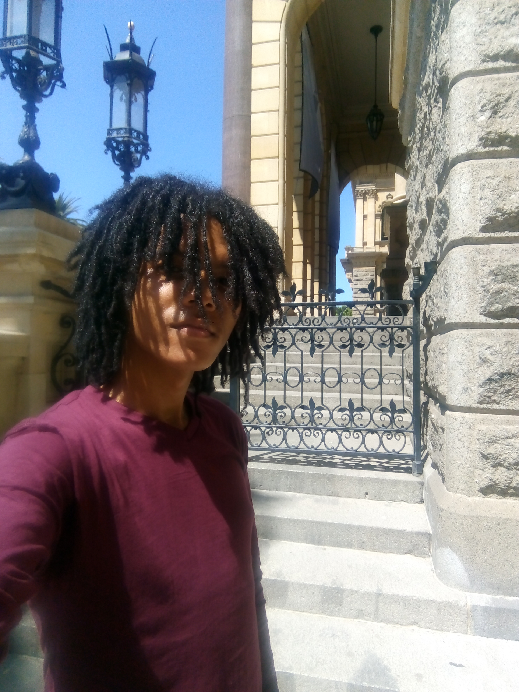

Jody Fortuin

Front-end Projects
Html + Simple grid webpage
basic_webpage
Back-end Projects
TDD Unit Tests
bootcamp_tests
About
Enjoys ice skating, eating ice blocks, cutting grass, watching paint dry and jumping out of planes. Below is a link to my CV:
Curriculum Vitae
Below you can find links to a few of my published articles:
https://listamaze.com/10-most-mysterious-landmarks-in-the-world/amp/
https://listgecko.com/doomed-expeditions-history/